TOOLS USED IN CART 351
GITHUB(for Version Control)+GITHUB PAGESfor class websiteVSCODE:text editor + server extension, language support + other packages -> the ide (integrated development environment)CHROME, FIREFOX, POSTMAN...:clients and debuggingHOSTING:TBAPYTHON + FLASK:Backend (Server side development)MONGO DB:DatabasesHTML,CSS, JAVASCRIPT:Frontend (Client side development)OTHER PUBLIC/PRIVATE API's:i.e. google maps, leaflet, openAI ... special/extended services to be integrated into ones projects :)
HOW THE WEB WORKS
TERMINOLOGY
A little dry :(CLIENTS
- An
application(i.e. a Browser) such as Chrome or Firefox that runs on a device (computer, phone etc…) & is connected to the Internet - Primary function:
to take user input, translate this input into a request, & send this request to a remote computer called a web server - Similarly, the client will
receive a response from the web server, translate the response and display the result to the user. - A client is not ONLY the application itself, rather it is ALSO the device that this application resides on (computer, tablet, phone…)
- Every client device has a unique address called an
IP addressthat other computers can use to identify it.
SERVERS
- A
web serveris a machine that connected to the internet and also has an IP address. - A server
waits for requestsfrom other machines (i.e. a client) & responds to these requests. - Unlike a client, which also has an IP address, the server has specific server software installed on it,
enabling it to know how to respondto incoming requests from the client. - The primary function of a web server is to
store, process and deliver web pages to clients. - There are many types of servers, web servers, database servers, file servers, application servers, and more…
IP ADDRRESS
- This is a numerical identifier for a device (computer, server, printer, router, etc.) on a
TCP/IP network. Every deviceconnected to the internet has an IP address that it uses toidentify and communicatewith other connected devices.- IP addresses have four sets of numbers separated by decimal points (e.g. 245.22.19.26). This is called the
logical address. - In order to locate a device in the network, the logical IP address is converted to a
physical addressby the TCP/IP protocol software - This physical address (i.e. MAC address) is built into your hardware.
ISP: The Internet Service Provider
- This is the middle man between the client and public web server(s).
- For the typical homeowner, the ISP is usually a cable company: Videotron, Bell, etc…
- Essentially, the browser will communicate a request to the ISP - which will then forward the request onwards (towards the destination).
DNS
- When a browser receives a request from a user to access ie.www.concordia.ca,
it doesn’t know where or how to look for www.concordia.ca. - It is then the
ISP’stask to do aDNS (Domain Name System) lookupto find out what the IP address is of the site you’re trying to visit... - The look up is done to the
DNS (Domain Name System)which is adistributed databasewhich keeps track of all domain names of connected devices and their corresponding IP addresses on the Internet. (don’t worry about the details of a distributed database)
HTTP & URL
Hyper-text Transfer Protocol:?The protocol that web browsers and web servers use to communicate with each other over the Internet. The HTTP protocol runs on-top of the TCP/IP protocol.Uniform Resource Locators:URLs identify a particular web resource. A simple example is http://www.concordia.ca/academics/undergraduate.htmlThe URL specifies:- the
protocol:http Host name:concordia.ca-
A file/path name:=/academics/undergraduate.html
- the
- A user can obtain the web resource identified by this URL via HTTP from a network host whose domain name is concordia.ca.
- A URL is also a
hypertext link: the threads that interconnect the web. Hypertextwas first popularized by Ted Nelson, used by Douglas Engelbart, and implemented by Tim Berners-Lee.- A
linkis a portion of text or graphic that transfers the user to the associated web address when clicked on..
TCP/IP (VERY HIGH LEVEL)
TCP/IP:The Transmission Control Protocol/Internet Protocol - is most widely used communications protocol. A
protocol is simply a standard set of rules for doing something.
And ... TCP/IP is used as a standard for transmitting data over networks.
The TCP/IP protocol uses a specific strategy for transmission of data:
- When a request is made for data, that data is broken up into many tiny chunks called
packets. - Each packet is tagged with:
a unique header(includes sender/receiver port info)an IP headerwhich includes the sender/receiver IP addresses
- The packet is then transmitted through an
ethernet, WiFi or Cellularnetwork and is allowed to travel on any route and take as many hops (has to pass through another device) as it needs to get to the final destination. - Once the packets reach the destination, they are reassembled again and delivered as one piece.
AN EXAMPLE APPLICATION
As an introduction to what you will learn in to develop and implement in this
course, we will go through some principles of web development by examining an
example application at https://intrval.xyz/cart351Example/.
The application exists only to demonstrate some basic concepts of the course, and is, by no means, the only
way a modern web application should be made. You will learn various strategies and techniques in this
course - depending on what you will be attempting to make :)
So, start by opening the example application in your browser.
Sometimes this takes a while.
FIRST RULE OF WEB DEVELOPMENT
As you know from your p5, javascript and intro to web classes: ALWAYS keep the
Developer Console OPEN in your web browser.
Make sure that the Network tab is open, and check the Disable cache option as
shown in the image below.
The Preserve log can also be useful (it saves the logs printed by the application when the page is reloaded).
NB: The most important tab is the Console tab. However, in this introduction, we
will be using the Network tab quite a bit :) .
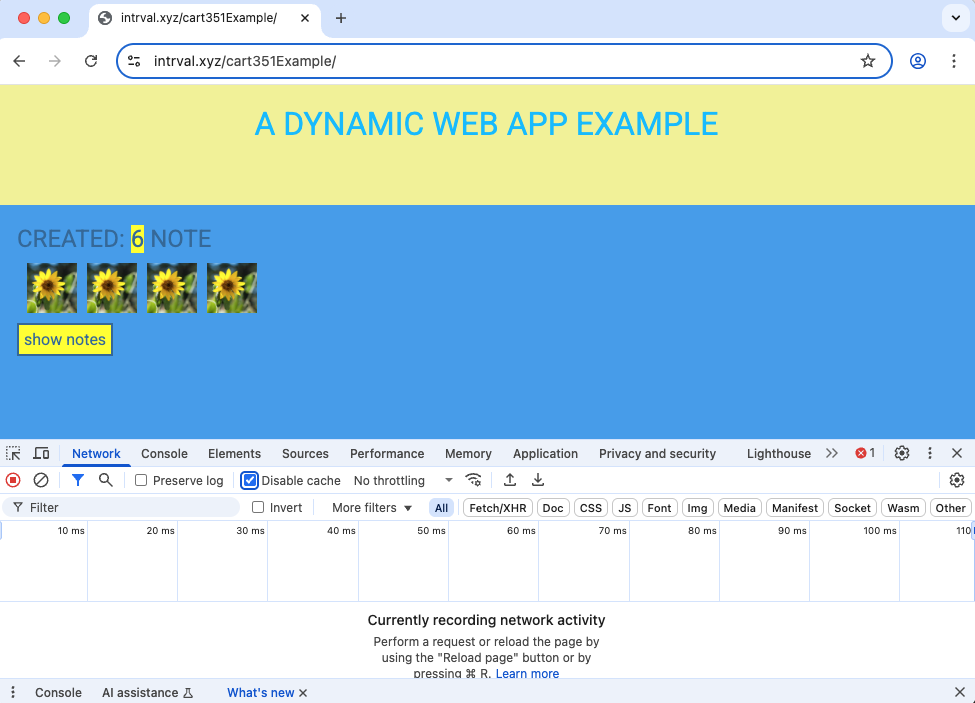
HTTP GET
The server and the web browser communicate with each other using the HTTP protocol. The Network tab shows how the browser and the server communicate.
When you reload the page (To refresh a webpage, on windows, press the Function-F5 keys. On macOS, press command-R), the console will show that two events have happened:
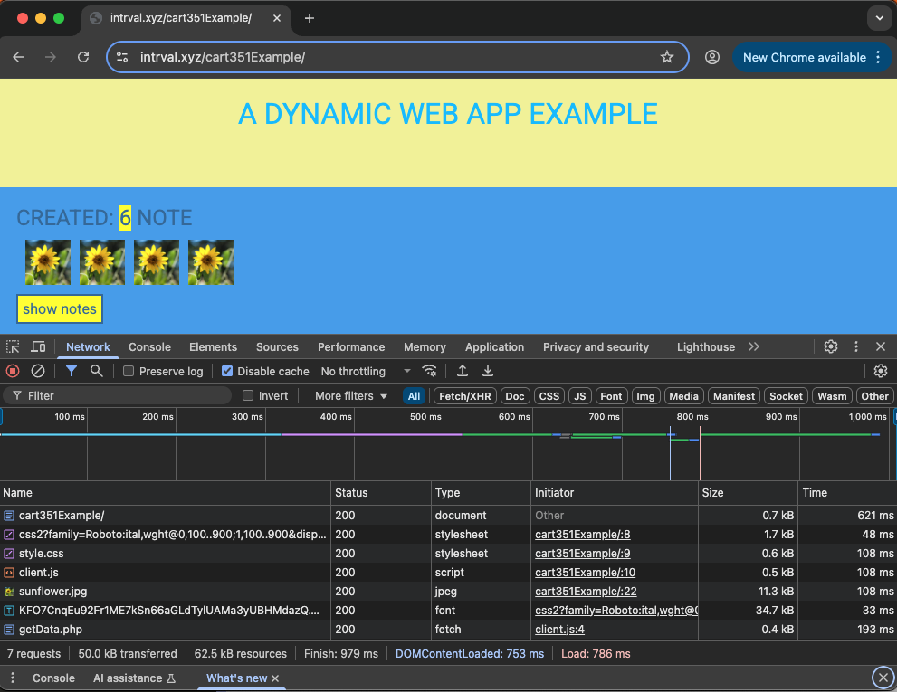
Now click on the first event to reveal more info:
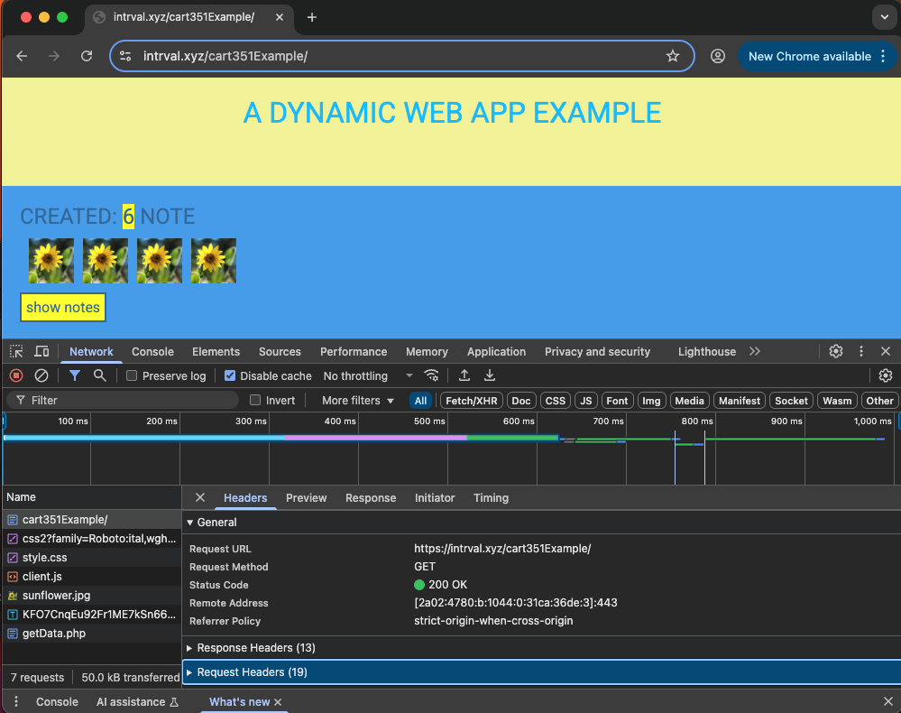
- The
Generalsection: shows that the browser requested the addresshttps://intrval.xyz/cart351Example/using theGET method.
It also shows that therequest was successful, because the server response had theStatus code 200.
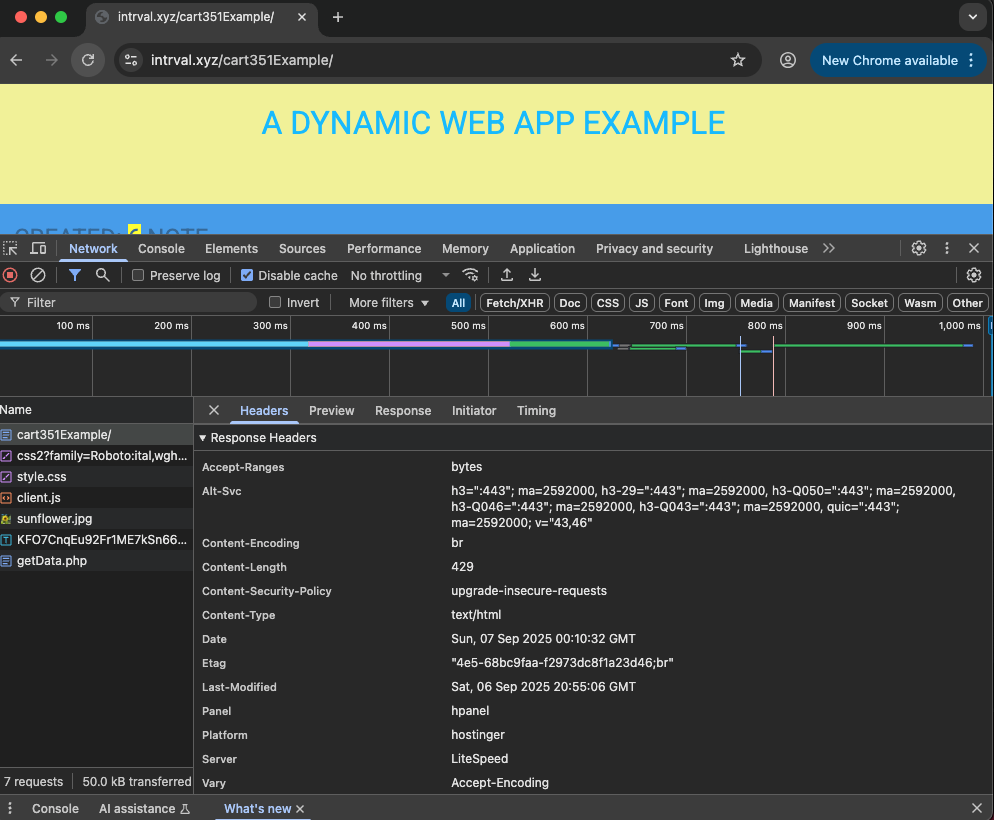
- The
Response headersabove tell us e.gthe sizeof the response in bytes and theexact timeof the response. - An important label:
Content-Typetells us that the response is a text file in utf-8 format and the contents of which have beenformatted with HTML. The browser thus knows the response is to be aregular HTML pageand to render it to the browser like a web page.
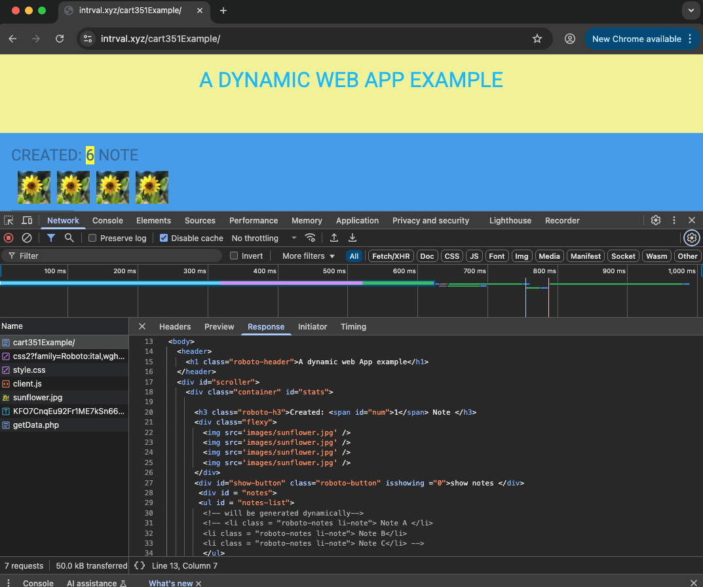
-
The
Response tabshows the response data, a regular HTML page. Thebodysection determines the structure of thepagerendered to the screen:- The
body(amongst other items) contains a div element with class namecontainercontaining:- a h3 element displaying the number of notes created
divwith class nameflexywhich contains four img tags- another
divelement with the idshow-button, to view the notes. - and another
divelement with the idnotes, which contains a list element to structure the list of notes - ...
- The
- For each distinct
image element, the browser will performanother HTTP requestto fetch the relevent image. In this case: the image sunflower.jpg is fetched from the server - as all four image tags contain the samesourceonly one request needs to be made. The details of the request are as follows:
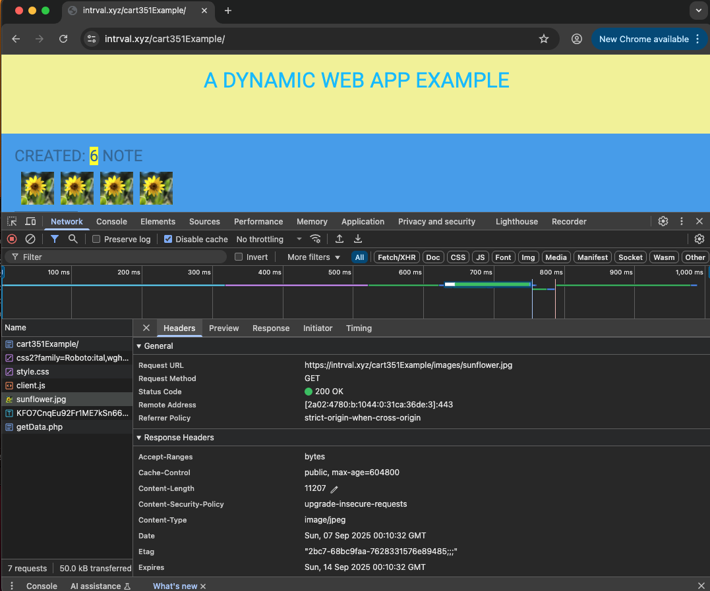
- The
requestwas made to the address https://intrval.xyz/cart351Example/images/sunflower.jpg and its type isHTTP GET. - The
responseheaders notify thebrowserof pertinent info, that enables itto render the image correctly to the screen:):- the
response size is 11207 bytes - its
Content-type is image/jpeg, so it is a jpeg image. - ...
- the
{kind=link}
The chain of events caused by opening the page https://intrval.xyz/cart351Example on a browser forms the
following sequence diagram:
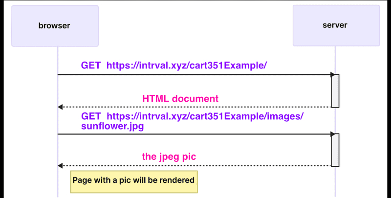
The sequence diagram visualizes how the browser and server are communicating over the time.
The time flows in the diagram from top to bottom, so the diagram starts with the first request that the browser sends to server,
followed by the response:
- First, the browser sends an HTTP GET request to the server to fetch the HTML code of the page.
- The
img tagin the HTML prompts the browser to fetch the image:sunflower.jpg. - The browser renders the HTML page and the image to the screen.
- Even though it is difficult to notice, the HTML page begins to render before the image has been fetched from the server.
TRADITIONAL WEB APPS
The homepage of our example application works like a traditional web application.
When entering the page, the browser fetches the HTML document detailing the structure and the textual content of
the page from the server.
The server has formed this document somehow. The document can be a static text file saved
into the server's directory - which it is in our case:).
The server can also form the HTML documents dynamically according to the application's code, using, for example, data from a database.
In traditional web applications, the browseronly fetches HTML data from the server, and all application logic is on the server.
A server can be created using Java Spring, Python Flask, Ruby
on Rails, Express with Node.js, PHP... to name just a few examples. The example application that we just accessed uses PHP.
In CART 351 - we will use Python Flask (a lightweight WSGI web app framework.)
Running application logic in the browser
Let's keep the Developer Console open. You should have noticed already (from looking at the Network Tab)that when the
html page is fetched - before fetching the image - the style.css and the client.js are fetched... (as they are parsed before the images...)
So: essentially after fetching client.js - the browser will begin to execute the code
in the script:
window.onload = async function () {
// get data and store:
const response = await fetch("getData.php");
const notesList = await response.json();
console.log(notesList)
let parentList = document.querySelector("#notes-list");
// access the num and populate dynamically
document.querySelector("#num").textContent = notesList.length;
//go through returned data
for(note of notesList){
//make dynamically a list
console.log(note)
let li = document.createElement("li");
li.classList.add("roboto-notes");
li.classList.add("li-note");
li.textContent = note.content;
parentList.appendChild(li)
}
document.querySelector("#show-button").addEventListener("click", function () {
// show the notes
if (this.getAttribute("isshowing") === "0") {
this.textContent = "hide notes";
document.querySelector("#notes").style.display = "block";
this.setAttribute("isshowing", "1");
// fetch the notes from the server ... remember fetech!
}
//hide notes
else {
document.querySelector("#notes").style.display = "none";
this.textContent = "show notes";
this.setAttribute("isshowing", "0");
}
});
//post form data (part two)
document.querySelector("#saveButton").addEventListener("click", async function (e) {
e.preventDefault();
let form = document.querySelector("#addPostForm");
let data = new FormData(form);
// for (let pair of data.entries()) {
// console.log(pair[0] + ", " + pair[1]);
// }
let response = await fetch("postData.php", {
method: "POST",
body: data,
});
const textResponse = await response.text();
console.log(textResponse);
});
};
Lets first focus on the following two lines:
window.onload = async function () {
// get data and store:
const response = await fetch("getData.php");
const notesList = await response.json();
OK: - again: as this is the intro class :) to CART 351 we will not go into
details... RATHER this is to give you context for what you will be able to do by the end of the semester :) --- so
just bear with me:
- We make a GET request to the **server side script** (
getData.php):<?php //check if there has been something posted to the server to be processed if ($_SERVER['REQUEST_METHOD'] == 'GET') { $filePath = 'data.json'; // Path to your JSON file // Check if the file exists if (file_exists($filePath)) { // Read the entire contents of the file into a string $jsonString = file_get_contents($filePath); echo $jsonString; exit; } else { echo "JSON file not found."; exit; } }//GET ?> - Data is returned from the server side script - (NOTE: we will review the
FETCH APIin class later in the semester :)) - The data returned is in
jsonformat and we then use javascript to create html elements dynamically and append them to the page://go through returned data for(note of notesList){ //make dynamically a list console.log(note) let li = document.createElement("li"); li.classList.add("roboto-notes"); li.classList.add("li-note"); li.textContent = note.content; parentList.appendChild(li) }
Lets review what has just happened with another sequence diagram ... why? Because, in this introduction we are
concerned with how communication ((client)request -> (server) response) occurs between the client and the webserver:
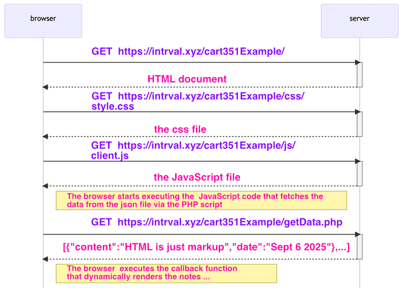
- The browser fetches the HTML code defining the content and the structure of the page from the server using an HTTP GET request.
- Links in the HTML code cause the browser to also fetch the CSS style sheet
style.css... and the JavaScript code fileclient.js - The browser executes the JavaScript code. The code makes an HTTP GET request to the address
https://intrval.xyz/cart351Example/getData.php, which returns the notes as JSON data. - When the data has been fetched, the browser executes an event handler, which renders the notes to the page using the DOM-API.
Phew ...
So essentially - what have we understood? Well that we can get data / resources from the web server by making GET
requests...
Well - we will ALSO learn in CART 351 and cover in great detail how to GET data from a user
and POST it to the web server....
And for completeness (and so that you know what is coming...) this example application can also do that: in the most conventional way:
Forms and HTTP Post
If you scroll down the HTML page - we come to the adding a new note section:
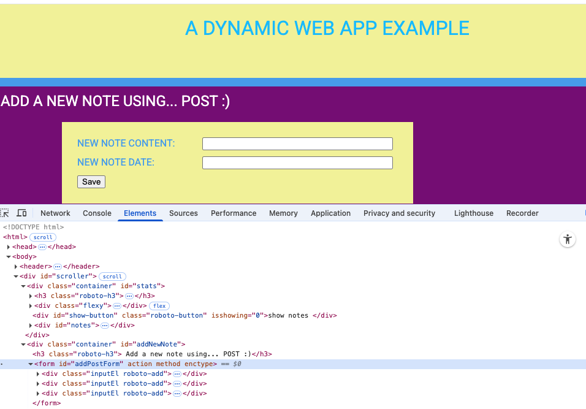
The html consists of an HTML form element.
When the button on the form is clicked, the browser will send the user input to the server ->via JavaScript -
BUT DO NOT WORRY about the details now. Let's just open the Network tab and see what submitting the form looks like:
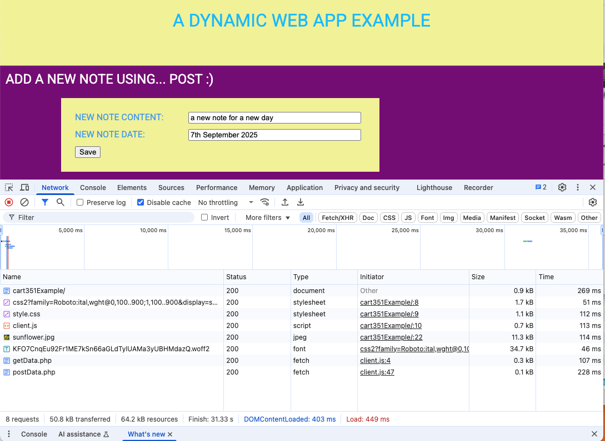
You can see that - that the browser made a request for php script called postData.php
If we click on that request - we can access the Headers tab:
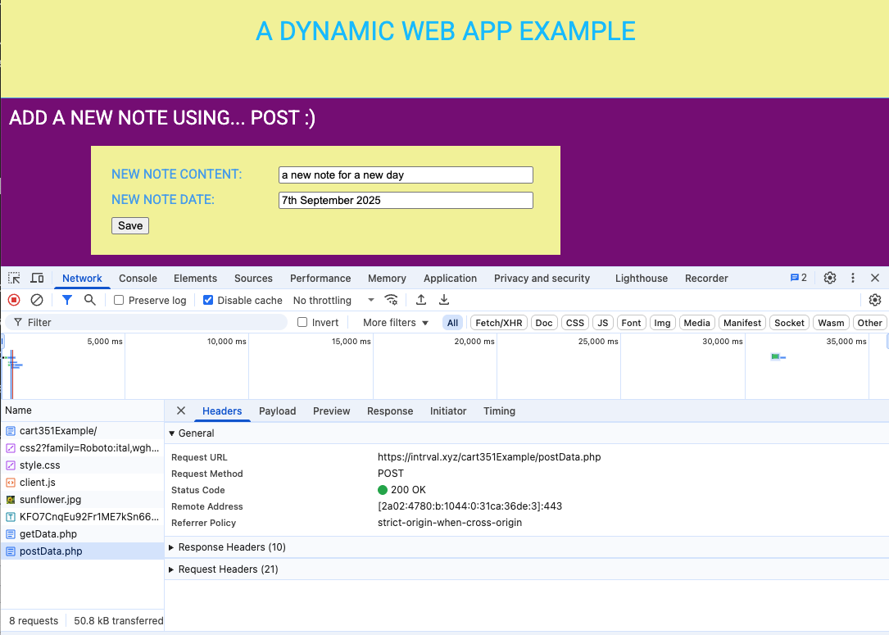
It is an HTTP POST
request to the php page.. and if you click on Payload tab :
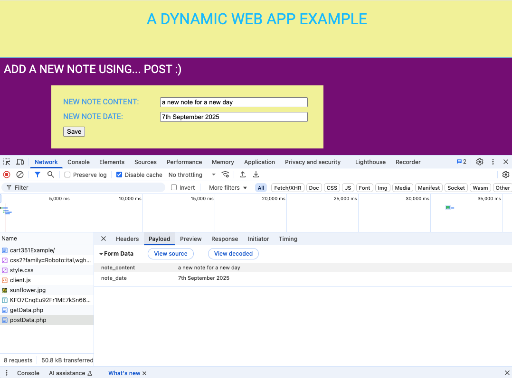
What you see is that the data in the form of key-value pairs has been sent to the server ... (as part of the
request)
So I will not go into great detail here - as this is what the course is for ... but essentially what do we do with the data? Well we append it to the json file... so that next time you reload the page there will be one more note!
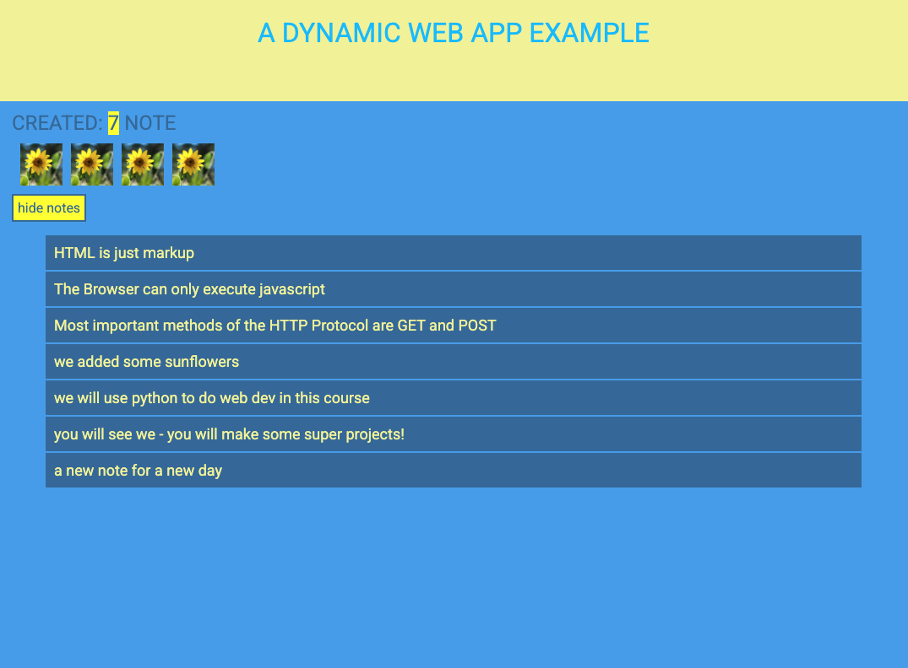
So what is CART 351 about?
Well - instead of just developing on the client side (i.e. events in javascript) you will learn to make full-stack web applications .
Practically all web applications have (at least) two layers: the browser, being
closer to the end-user, is the top layer, and the server the bottom one. There is often also a database layer
below the server.
We can therefore think of the architecture of a web application as a stack of
layers. No really - it will be fun:)
Ultimately you will be able to build web apps that can evolve and change (are not static) depending on input
from clients.
And what is a client? Well not only is the browser a client, rather touchdesigner, maxmsp, unity, arduino, rasberryPi
unreal, unity etc ... all have libraries that allow for one to communicate via HTTP (they can act as clients)!
Even better - we will also learn in this class to use web sockets - which will allow for
realtime, bi directional communication between client(s) and server(s)!